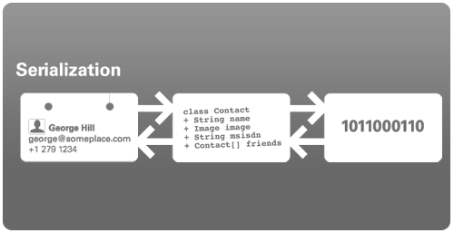

Serialization is the process of writing objects into streams and complementary reconstructing them from streams.
This mechanism has many uses like persisting objects (saving and loading them) or transmitting them
over connections like an HTTP connection.

With the J2ME Polish serialization framework it's extremely easy to make objects serializable - just implementing the (empty) interface de.enough.polish.io.Serializable is enough.
You can make your classes serializable in two ways:
Read on for the gory details.
implements Serializable is all that's needed to make your J2ME class serializable!
It's easy to make you class serializable fully automatically:
That's it! No more work needed on your side!
J2ME Polish processes classes implementing Serializable and generates all
the code required to read and write the data into/from a stream.
To be more precise: the methods defined in de.enough.polish.io.Externalizable are generated by
J2ME Polish and added to the respective classes.
Use the transient modifier to mark fields that should not be serialized:
private transient String password; // do not serialize this field
Also note that any static fields are not serialized.
There are some rules so that J2ME Polish can make your class serializable. All the instance fields of your class need to fall into one of the following categories:
int, double or boolean.Serializable or ExternalizableSerializable or Externalizable (note: multidimensional arrays cannot be automatically serialized)java.lang, java.util or javax.microedition.lcdui package. At the moment following native classes can be serialized:
When you wanna have full control over what is written to the stream you should inherit from the
interface de.enough.polish.io.Externalizable and implement the methods
read(DateInputStream) and write(DataOutputStream) yourself.
With this you can easily decide yourself which data are written in what format to the stream.
Please note that you are also required to add a public default constructor to your class (that's a constructor that takes no arguments).
Use the de.enough.polish.io.Serializer to read and write serializable classes
In this example we have a Contact class that implements the Serializable interface.
import de.enough.polish.io.Serializable;
public class Contact
implements Serializable
{
private final String firstName;
private final String lastName;
private final transient String password; // do not serialize this field
private final Date birthday;
private Contact referral;
public Contact( String firstName, String lastName, String password, Date birthday ) {
this.firstName = firstName;
this.lastName = lastName;
this.password = password;
this.birthday = birthday;
}
public String getFirstName() {
return this.firstName;
{
...
}
Note that J2ME Polish is adding a default constructor to the Contact class and removes the final modifiers to make the class serializable.
In this example we have the same Contact class, in which we now control the serialization manually by implementing the Externalizable interface.
import de.enough.polish.io.Externalizable;
import java.io.*;
public class Contact
implements Externalizable
{
private String firstName;
private String lastName;
private String password;
private Date birthday;
private Contact referral;
public Contact() {
// default constructor is required
}
public Contact( String firstName, String lastName, String password, Date birthday ) {
this.firstName = firstName;
this.lastName = lastName;
this.password = password;
this.birthday = birthday;
}
public String getFirstName() {
return this.firstName;
{
...
/**
* Stores the internal instance fields to the output stream.
*
* @param out the output stream to which instance fields should be written
* @throws IOException when writing fails
*/
public void write( DataOutputStream out )
throws IOException
{
out.writeUTF( this.firstName );
out.writeUTF( this.lastName );
boolean isNotNull = (this.birthday != null);
out.writeBoolean( isNotNull );
if (isNotNull) {
out.writeLong( this.birthday.getTime();
}
isNotNull = (this.referral != null);
out.writeBoolean( isNotNull );
if (isNotNull) {
this.referral.write( out );
}
}
/**
* Restores the internal instance fields from the given input stream.
*
* @param in the input stream from which the data is loaded
* @throws IOException when reading fails
*/
public void read( DataInputStream in )
throws IOException
{
this.firstName = in.readUTF();
this.lastName = in.readUTF();
boolean isNotNull = in.readBoolean();
if (isNotNull) {
this.birthday = new Date( in.readLong() );
}
isNotNull = in.readBoolean();
if (isNotNull) {
this.referral = new Contact();
this.referral.read( in );
}
}
}
In this example we have a list of contacts that we are going to send over a stream, for example the output stream of a HTTP Connection.
import de.enough.polish.io.Serializer;
import java.io.*;
import java.util.Vector;
public class ContactsManager
{
private Vector contacts;
public ContactManager() {
this.contacts = new Vector();
}
public void addContact( Contact contact ) {
this.contacts.add( contact );
}
public void send( DataOutputStream out )
throws IOException
{
Serializer.serialize( this.contacts, out );
}
public void receive( DataInputStream in )
throws IOException
{
this.contacts = (Vector) Serializer.deserialize( in );
}
}
Please refer to the "serialization" sample application in ${polish.home}/samples/serialization for an example how to use these concepts.
<%include end.txt %>